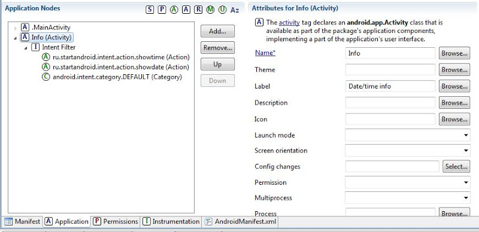
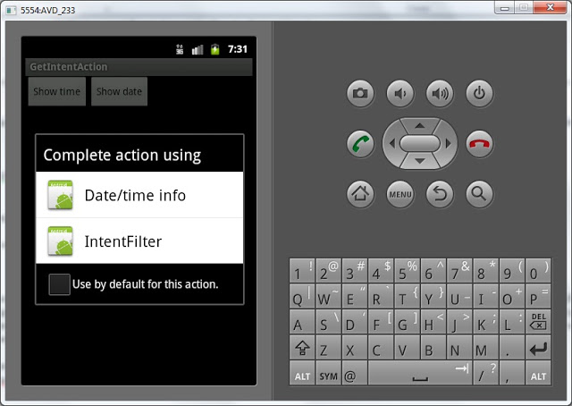
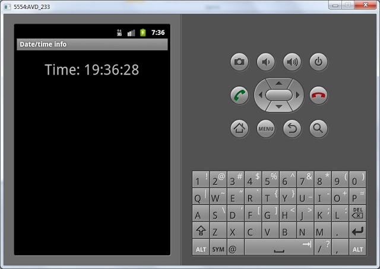
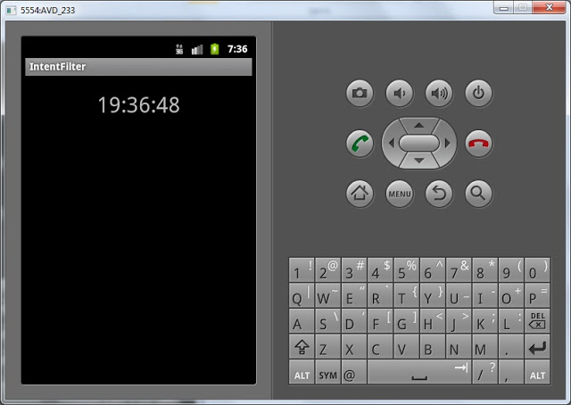
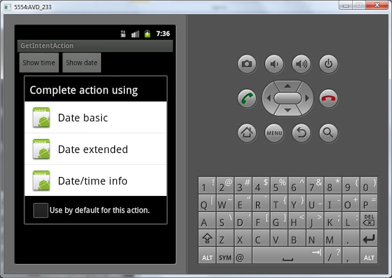
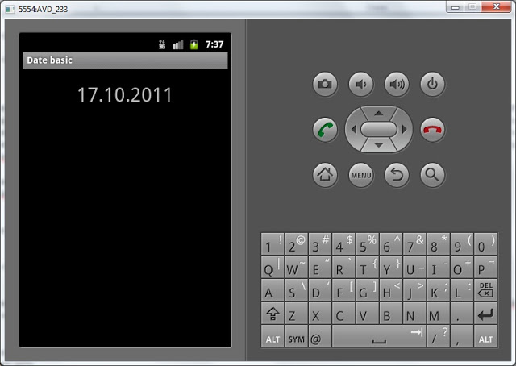
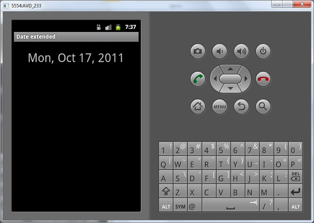

В этом уроке:
- читаем action из Intent
На прошлом уроке мы сделали наглядный пример, показывающий, как связаны между собой action, Intent и Intent Filter. На этом уроке продолжим тему. Есть две новости: хорошая и хорошая )
Первая новость. Intent Filter может содержать в себе несколько action. Тем самым Activity дает понять, что она способна на несколько действий. Например, не только просмотр картинки, но и редактирование. Получается, что Activity может подойти разным Intent с разными action.
Вторая новость. Activity, которое было вызвано с помощью Intent, имеет доступ к этому Intent и может прочесть его атрибуты. Т.е. может узнать какой action использовался.
Мы сделаем следующее: создадим Activity и настроим Intent Filter на action = ru.startandroid.intent.action.showtime и action = ru.startandroid.intent.action.showdate. Тем самым мы обозначаем, что это Activity способно и время показать и дату. Далее мы будем создавать Intent либо с action = ru.startandroid.intent.action.showtime, либо с ru.startandroid.intent.action.showdate. Они оба будут вызывать одно Activity. А чтобы Activity знало показывать ему дату или время, мы будем читать action из Intent и по нему определять.
В общем, сейчас начнем делать и все станет понятно )
Создадим проект:
Project name: P0271_GetIntentAction
Build Target: Android 4.0
Application name: GetIntentAction
Package name: ru.startandroid.develop.p0271getintentaction
Create Activity: MainActivity
Открываем main.xml и рисуем две кнопки:
<?xml version="1.0" encoding="utf-8"?>
<LinearLayout
xmlns:android="http://schemas.android.com/apk/res/android"
android:layout_width="fill_parent"
android:layout_height="fill_parent"
android:orientation="horizontal">
<Button
android:layout_width="wrap_content"
android:layout_height="wrap_content"
android:id="@+id/btnTime"
android:text="Show time">
</Button>
<Button
android:layout_width="wrap_content"
android:layout_height="wrap_content"
android:id="@+id/btnDate"
android:text="Show date">
</Button>
</LinearLayout>Экран точно такой же как и в прошлом уроке.
Код для MainActivity.java:
package ru.startandroid.develop.p0271getintentaction;
import android.app.Activity;
import android.content.Intent;
import android.os.Bundle;
import android.view.View;
import android.view.View.OnClickListener;
import android.widget.Button;
public class MainActivity extends Activity implements OnClickListener {
/** Called when the activity is first created. */
@Override
public void onCreate(Bundle savedInstanceState) {
super.onCreate(savedInstanceState);
setContentView(R.layout.main);
Button btnTime = (Button) findViewById(R.id.btnTime);
Button btnDate = (Button) findViewById(R.id.btnDate);
btnTime.setOnClickListener(this);
btnDate.setOnClickListener(this);
}
@Override
public void onClick(View v) {
Intent intent;
switch(v.getId()) {
case R.id.btnTime:
intent = new Intent("ru.startandroid.intent.action.showtime");
startActivity(intent);
break;
case R.id.btnDate:
intent = new Intent("ru.startandroid.intent.action.showdate");
startActivity(intent);
break;
}
}
}Код тоже полностью из прошлого урока. Определяем кнопки, присваиваем обработчик – Activity, и вызываем Intent по нажатиям. Теперь мы сделаем Activity, которая будет ловить оба этих Intent.
Для начала создадим layout-файл info.xml:
<?xml version="1.0" encoding="utf-8"?>
<LinearLayout
xmlns:android="http://schemas.android.com/apk/res/android"
android:layout_width="match_parent"
android:layout_height="match_parent"
android:orientation="vertical">
<TextView
android:layout_width="wrap_content"
android:layout_height="wrap_content"
android:id="@+id/tvInfo"
android:text="TextView"
android:layout_gravity="center_horizontal"
android:layout_marginTop="20dp"
android:textSize="30sp">
</TextView>
</LinearLayout>На экране у нас один TextView.
Создаем Activity, назовем его просто Info.
Код Info.java:
package ru.startandroid.develop.p0271getintentaction;
import java.sql.Date;
import java.text.SimpleDateFormat;
import android.app.Activity;
import android.content.Intent;
import android.os.Bundle;
import android.widget.TextView;
public class Info extends Activity {
@Override
protected void onCreate(Bundle savedInstanceState) {
super.onCreate(savedInstanceState);
setContentView(R.layout.info);
// получаем Intent, который вызывал это Activity
Intent intent = getIntent();
// читаем из него action
String action = intent.getAction();
String format = "", textInfo = "";
// в зависимости от action заполняем переменные
if (action.equals("ru.startandroid.intent.action.showtime")) {
format = "HH:mm:ss";
textInfo = "Time: ";
}
else if (action.equals("ru.startandroid.intent.action.showdate")) {
format = "dd.MM.yyyy";
textInfo = "Date: ";
}
// в зависимости от содержимого переменной format
// получаем дату или время в переменную datetime
SimpleDateFormat sdf = new SimpleDateFormat(format);
String datetime = sdf.format(new Date(System.currentTimeMillis()));
TextView tvDate = (TextView) findViewById(R.id.tvInfo);
tvDate.setText(textInfo + datetime);
}
}Мы получаем Intent с помощью метода getIntent(), читаем из него action и в зависимости от значения формируем и выводим на экран текст.
Не забываем прописать новое Activity в манифесте и создать ему Intent Filter с двумя action и category. И label укажите Date/time info.

Intent Filter для Info содержит два action. А значит если придет Intent c любым из них – то Activity будет вызвана.
Все сохраним и запустим.
Жмем кнопку Show time. Скорее всего вы увидите следующее:

Система предлагает нам выбор. Т.е. Intent с action = ru.startandroid.intent.action.showtime нашел два подходящих Activity. То, которое Date/time info мы создали только что, тут все понятно. Вопрос – откуда второе с названием IntentFilter. Ответ – это ActivityTime из прошлого урока. Называется оно IntentFilter потому, что на прошлом уроке мы не прописали в манифесте label для этого Activity и система по умолчанию отображает название приложения.
Если же система не отобразила диалог выбора, значит вы, либо не создавали приложение с прошлого урока, либо пересоздали AVD, либо где-то очепятка в коде.
Выбираем Date/time info и видим то, что только что кодили. Activity определило, что Intent был с action = ru.startandroid.intent.action.showtime и показало время с текстом Time:

Если же выбрать IntentFilter увидим Activity с прошлого урока:

Теперь попробуем нажать кнопку Show date: видим такой выбор:

Снова видим наше Date/time info и два Activity с прошлого урока. Они все содержат action = ru.startandroid.intent.action.showdate в Intent Filter и нам надо выбирать. Выберем Date/time info и видим дату с текстом Date:
Если же выбирать Date basic или Date extended увидим то, что делали на прошлом уроке :
обычную дату

и расширенную

Мы увидели, что одно Activity может быть вызвано с помощью Intent с разными action. Activity может прочесть action и выполнить необходимые действия.
Также мы убедились, что Intent ищет Activity по всем приложениям в системе. В этот раз он нашел Activity из приложения, которое мы делали на прошлом уроке.